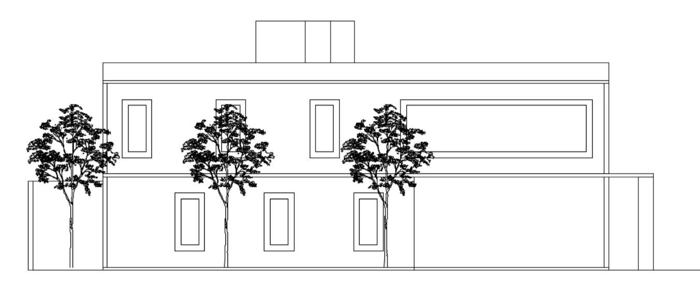

Vive la experiencia de un hogar diseñado para quienes lo quieren todo: confort, elegancia y seguridad. Con un diseño que maximiza la luz natural y la funcionalidad, cuenta con espacios ideales para el estudio y la creación, donde podrás trabajar con total tranquilidad.
Ubicación: Ubicada en una zona estratégica, cerca de universidades, transporte y servicios, es la combinación perfecta de un hogar cómodo, accesible y lleno de potencial para tu vida universitaria y profesional.
Privada Agustín Gutiérrez 6, General Anaya, 03340 Benito Juárez, CDMX, México
MX$ 3 500 000
Tel: (55) 123-456
Email: inmb@admpzarq.com
C. Tres Cruces 26, Coyoacán, 04000 CDMX, México